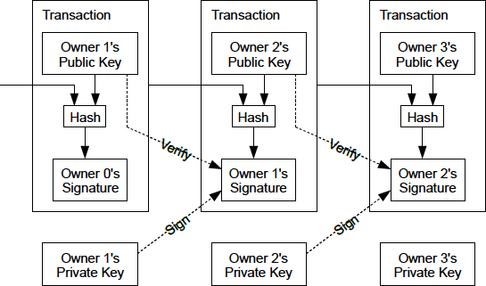
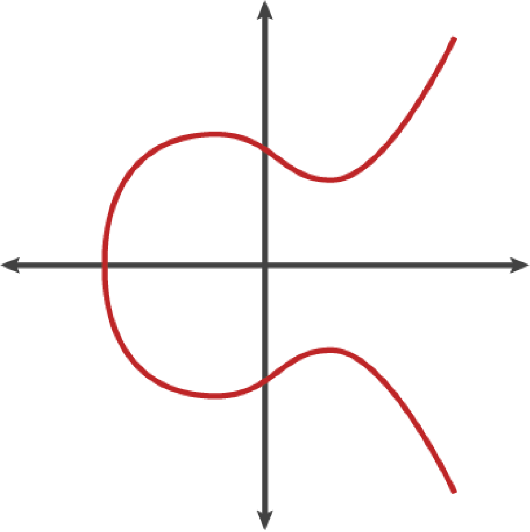
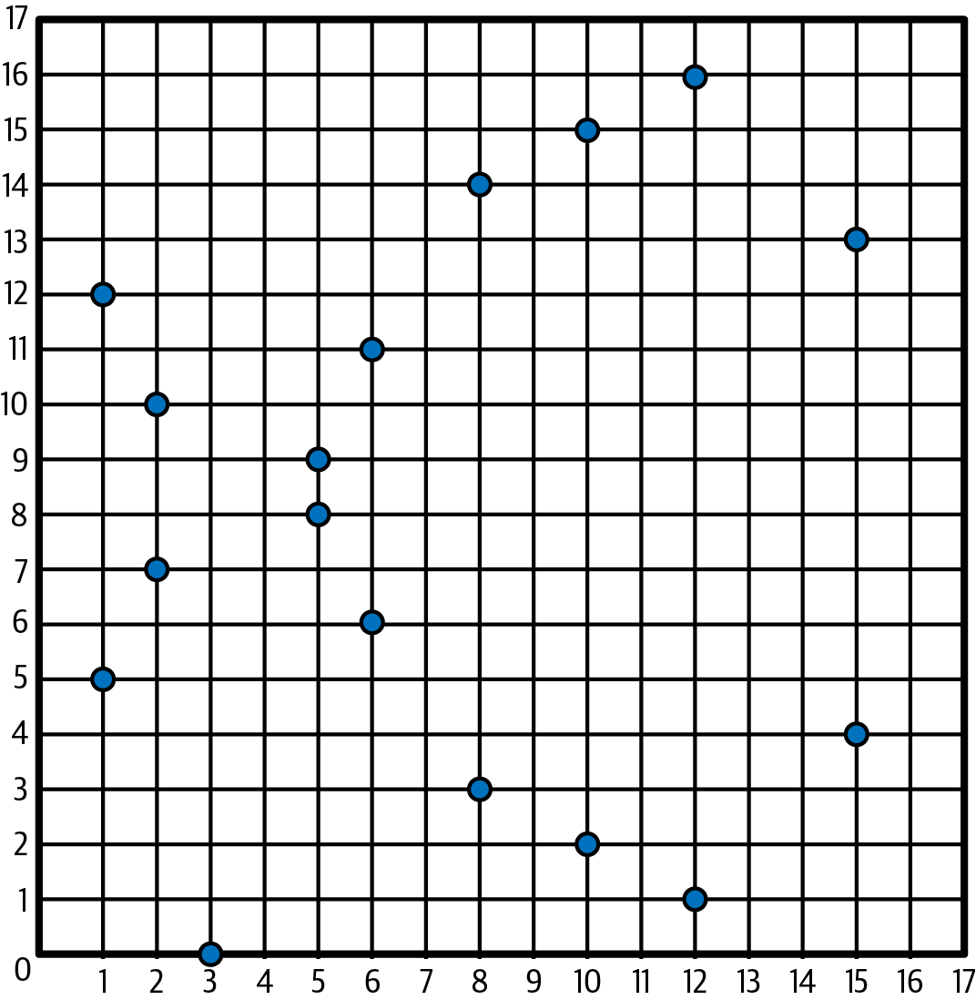
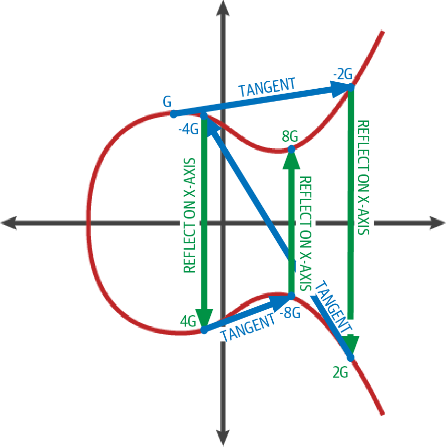
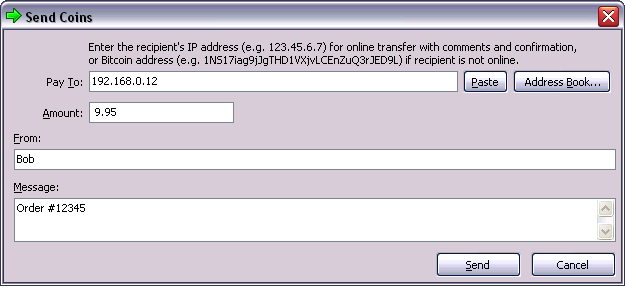
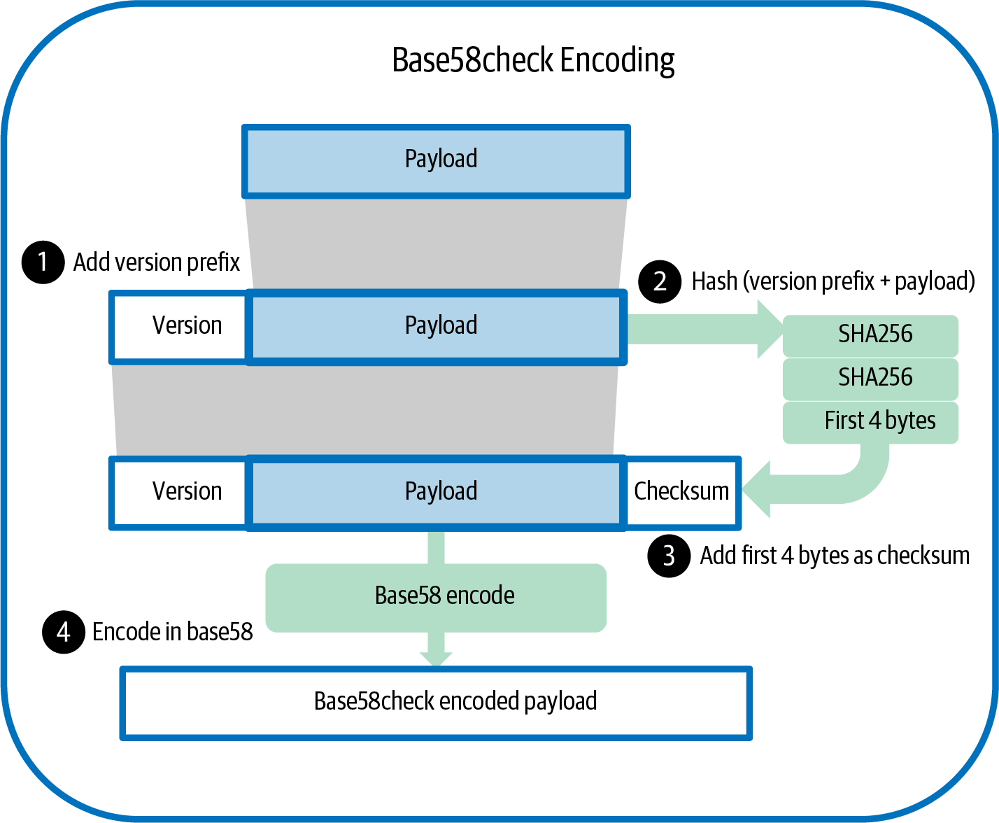
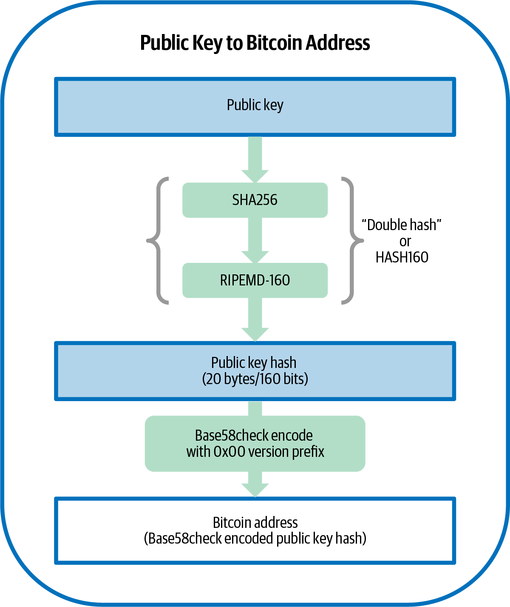
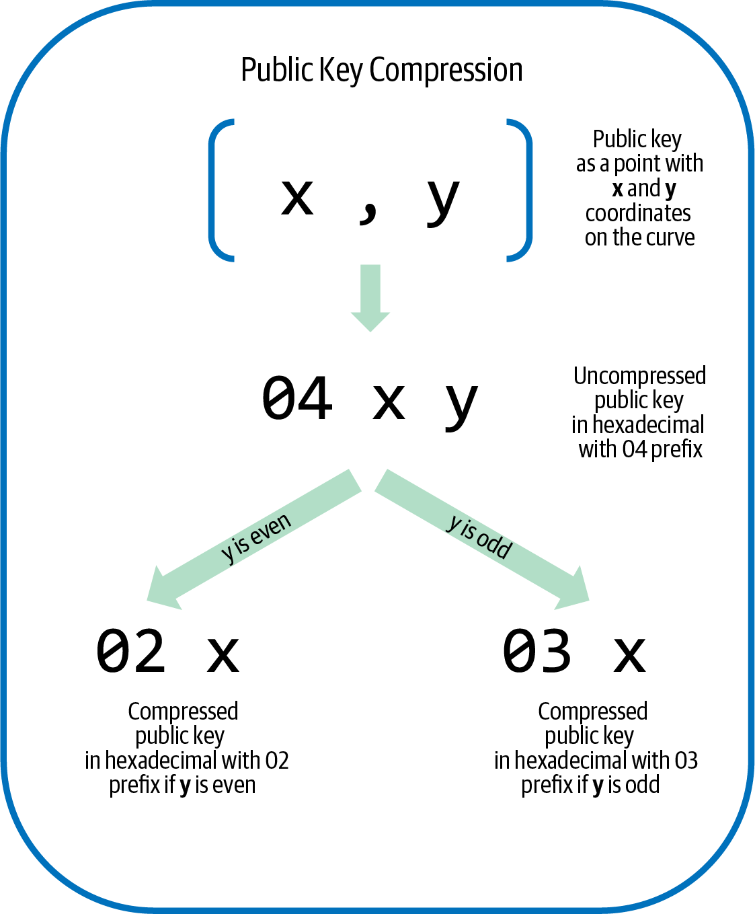
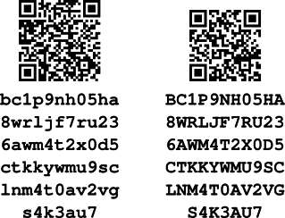

密钥与地址
Alice 想要给 Bob 付款，但将要验证她这笔交易的成千上万的比特币全节点既不认识 Alice 也不认识 Bob——而我们希望保持这种状态，以保护他们的隐私。Alice 需要传达"Bob 应当收到她的一些比特币"这一信息，又不能把这笔交易的任何方面与 Bob 的真实身份或 Bob 收到的其他比特币付款联系起来。Alice 所使用的方法必须确保只有 Bob 才能进一步花费他收到的这些比特币。
最初的比特币论文描述了一个非常简单的方案来实现这些目标，如 最初比特币论文中的交易链。 所示。

像 Bob 这样的接收者在一笔由花费者（比如 Alice）签名的交易中将比特币接收到一个公钥上。Alice 所花费的比特币此前曾被接收到她的某个公钥上，因此她使用相应的私钥来生成自己的签名。全节点可以验证 Alice 的签名承诺了某个哈希函数的输出，而该输出本身又承诺了 Bob 的公钥以及交易的其他细节。
在本章中我们将考察公钥、私钥、签名与哈希函数，然后把它们组合起来描述现代比特币软件所使用的地址。
公钥密码学
公钥密码学发明于 1970 年代，是现代计算机与信息安全的数学基础。
自公钥密码学发明以来，人们陆续发现了若干合适的数学函数，例如素数取幂以及椭圆曲线乘法。这些数学函数在一个方向上易于计算，而在相反方向上，以当今可用的计算机和算法来看是不可行的。基于这些数学函数，密码学使得创建不可伪造的数字签名成为可能。比特币使用椭圆曲线加法与乘法作为其密码学的基础。
在比特币中，我们可以使用公钥密码学来创建一对密钥，用于控制对比特币的访问权。这对密钥由一个私钥和一个由该私钥派生出来的公钥组成。公钥用于接收资金，私钥用于对交易签名以花费这些资金。
公钥与私钥之间存在一种数学关系，使得私钥可以用来对消息生成签名。这些签名可以用公钥来验证，而无需泄露私钥。
|
在某些钱包实现中，为方便起见，私钥和公钥被作为一对 密钥对 存储在一起。然而，由于公钥可以从私钥计算出来，因此也可以仅存储私钥。 |
一个比特币钱包包含若干密钥对，每一对都由一个私钥和一个公钥组成。私钥（k）是一个数字，通常由一个随机选取的数字派生而来。从私钥出发，我们使用椭圆曲线乘法这种单向密码学函数来生成公钥（K）。
私钥
私钥就是一个随机选取的数字。对私钥的控制权，是用户对与相应比特币公钥关联的所有资金行使控制权的根源。私钥用于创建签名，而签名通过证明对交易中所用资金的控制权来花费比特币。私钥必须始终保密，因为将其透露给第三方等同于把由该密钥保护的比特币的控制权交给了对方。私钥还必须备份并防止意外丢失，因为一旦丢失，它就无法恢复，由它保护的资金也将永远丢失。
|
比特币的私钥就是一个数字。你可以只用一枚硬币、一支铅笔和一张纸来随机选取你的私钥：抛硬币 256 次，你就得到了一个可以用于比特币钱包的随机私钥的二进制位。之后就可以从私钥生成公钥。但要小心，任何不完全随机的过程都可能显著降低你的私钥以及它所控制的比特币的安全性。 |
生成密钥的第一步、也是最重要的一步，是找到一个安全的随机性来源（计算机科学家称之为熵）。创建一个比特币密钥几乎等同于"在 1 到 2256 之间挑选一个数字"。只要挑选这个数字的方式不可预测、不可重复，具体使用什么方法并不重要。比特币软件使用密码学安全的随机数生成器来产生 256 位的熵。
更准确地说，私钥可以是 0 到 n - 1（包含两端）之间的任何数字，其中 n 是一个常数（n = 1.1578 × 1077，略小于 2256），其定义是比特币所使用的椭圆曲线的阶（见 椭圆曲线密码学详解）。要创建这样一个密钥，我们随机挑选一个 256 位的数字，并检查它是否小于 n。在编程实现上，这通常是通过将一段从密码学安全的随机性来源中收集到的较长随机比特串，输入到 SHA256 哈希算法中来完成的，SHA256 会方便地产生一个可以被解释为数字的 256 位的值。如果结果小于 n，我们就得到了一个合适的私钥。否则，就用另一个随机数重试。
|
不要自己编写代码来产生随机数，也不要使用你所用编程语言提供的"简单的"随机数生成器。请使用一个密码学安全的伪随机数生成器（CSPRNG），并以一个来自具有足够熵的来源的种子来初始化它。仔细研究你所选用的随机数生成器库的文档，确认它是密码学安全的。CSPRNG 的正确实现对密钥的安全性至关重要。 |
下面是一个随机生成的私钥（k），以十六进制格式显示（256 位以 64 个十六进制数字表示，每个 4 位）：
1E99423A4ED27608A15A2616A2B0E9E52CED330AC530EDCC32C8FFC6A526AEDD
|
比特币私钥空间的大小（2256）是一个深不可测的巨大数字。它在十进制中约为 1077。作为对比，可见宇宙据估计包含 1080 个原子。 |
椭圆曲线密码学详解
椭圆曲线密码学（ECC）是一种非对称密码学（或称公钥密码学），其安全性基于椭圆曲线上点的加法与乘法所表示的离散对数问题。
一条椭圆曲线。 展示了一条椭圆曲线的例子，与比特币所使用的曲线类似。

比特币使用一条特定的椭圆曲线及一组数学常数，这些参数由美国国家标准与技术研究院（NIST）制定的 secp256k1 标准所定义。secp256k1 曲线由如下函数定义，该函数生成一条椭圆曲线：
或者写作：
其中 mod p（对素数 p 取模）表示该曲线定义在阶为素数 p 的有限域上，也记作 \(\( \mathbb{F}_p\)\)，这里 p = 2256 – 232 – 29 – 28 – 27 – 26 – 24 – 1，是一个非常大的素数。
由于该曲线定义在阶为素数的有限域之上，而非定义在实数域上，因此它看起来像散落在二维平面上的一片点阵，难以直观可视化。但其数学结构与定义在实数域上的椭圆曲线完全一致。例如，椭圆曲线密码学：把 p=17 的 F(p) 上的椭圆曲线可视化。 展示了同一条椭圆曲线在一个小得多的、阶为素数 17 的有限域上的形态，呈现为网格上的若干点。比特币所用的 secp256k1 椭圆曲线可以理解为分布在一个大到难以想象的网格上、复杂得多的点阵图样。

举例来说，下面这个坐标为 (x, y) 的点 P 就是 secp256k1 曲线上的一点：
P =
(55066263022277343669578718895168534326250603453777594175500187360389116729240,
32670510020758816978083085130507043184471273380659243275938904335757337482424)用 Python 确认该点位于椭圆曲线上 展示了如何用 Python 自行验证这一点。
Python 3.10.6 (main, Nov 14 2022, 16:10:14) [GCC 11.3.0] on linux
Type "help", "copyright", "credits" or "license" for more information.
> p = 115792089237316195423570985008687907853269984665640564039457584007908834671663
> x = 55066263022277343669578718895168534326250603453777594175500187360389116729240
> y = 32670510020758816978083085130507043184471273380659243275938904335757337482424
> (x ** 3 + 7 - y**2) % p
0在椭圆曲线数学中，存在一个被称为"无穷远点"的点，它在加法中扮演的角色大致相当于零。在计算机中，它有时用 x = y = 0 来表示（这并不满足椭圆曲线方程，但作为一种单独的特殊情形便于判断）。
此外还定义了一个 + 运算，称为"加法"，其性质与小学课堂上学到的实数加法颇为相似。给定椭圆曲线上的两点 P1 和 P2，存在第三点 P3 = P1 + P2，同样位于椭圆曲线上。
从几何上看，第三点 P3 的计算方式是：作一条经过 P1 与 P2 的直线。该直线恰好会与椭圆曲线再交于一个点。记该点为 P3' = (x, y)。然后将其关于 x 轴翻转，即得 P3 = (x, –y)。
有几种特殊情况说明了为何需要"无穷远点"。
如果 P1 与 P2 是同一个点，那么 P1 与 P2 之间的"直线"应延伸为曲线在该点 P1 处的切线。这条切线恰好会与曲线再相交于一个新点。可以用微积分中的技巧来求出该切线的斜率。有趣的是，即便我们把关注范围限定在两坐标均为整数的曲线点上，这些技巧依然有效！
在某些情况下（即 P1 与 P2 具有相同的 x 坐标但不同的 y 坐标时），这条切线/连线会恰好是垂直的，此时 P3 = "无穷远点"。
如果 P1 是"无穷远点"，那么 P1 + P2 = P2。同理，若 P2 是无穷远点，则 P1 + P2 = P1。由此可见无穷远点扮演了"零"的角色。
可以证明 + 满足结合律，即 (A + B) + C = A + (B + C)。这意味着我们可以无歧义地把 A + B + C 写成不带括号的形式。
既然定义了加法，便可以按照将加法推广的标准方式来定义乘法。对椭圆曲线上的点 P，如果 k 是一个整数，则 kP = P + P + P + … + P（共 k 次）。注意，在此情形下 k 有时会被令人困惑地称为"指数"。
公钥
公钥是通过椭圆曲线乘法从私钥计算得到的，这一运算不可逆：K = k × G，其中 k 是私钥，G 是一个被称为_生成点_的常数点，K 是得到的公钥。其逆运算——所谓的"求解离散对数"，即在已知 K 的情况下反求 k——其难度等同于穷举 k 的所有可能取值（即暴力搜索）。在演示如何由私钥生成公钥之前，我们先更深入地了解一下椭圆曲线密码学。
|
椭圆曲线乘法属于密码学家所说的"陷门"函数：正向（乘法）容易计算，反向（除法）则不可行。掌握私钥的人可以轻松算出公钥并把它公开分享，深知任何人都无法对该函数取逆、从公钥反推出私钥。这一数学技巧成为不可伪造且安全的数字签名的基础，用以证明对比特币资金的控制权。 |
从一把以随机生成的数字 k 形式存在的私钥出发，将它乘以曲线上一个预先约定的点——生成点 G，得到曲线上别处的另一个点，这就是对应的公钥 K。生成点作为 secp256k1 标准的一部分被指定，对比特币中所有密钥而言始终保持不变：
其中 k 是私钥，G 是生成点，K 是得到的公钥（曲线上的一个点）。由于对所有比特币用户而言生成点都相同，因此私钥 k 与 G 相乘的结果始终是同一个公钥 K。k 与 K 之间的关系是固定的，但只能朝一个方向计算——从 k 到 K。正因如此，比特币公钥（K）可以与任何人分享，而不会泄露用户的私钥（k）。
|
私钥可以转换为公钥，但公钥无法反向转换为私钥，因为这个数学运算只能朝一个方向进行。 |
在实现椭圆曲线乘法时，我们取前面生成的私钥 k 与生成点 G 相乘，从而求出公钥 K：
K = 1E99423A4ED27608A15A2616A2B0E9E52CED330AC530EDCC32C8FFC6A526AEDD × G公钥 K 被定义为一个点 K = (x, y)：
其中：
x = F028892BAD7ED57D2FB57BF33081D5CFCF6F9ED3D3D7F159C2E2FFF579DC341A y = 07CF33DA18BD734C600B96A72BBC4749D5141C90EC8AC328AE52DDFE2E505BDB
为了直观展示一个点与整数相乘的过程，我们将使用定义在实数域上的更简单的椭圆曲线——请记住，数学原理是相同的。我们的目标是求出生成点 G 的倍数 kG，这等价于将 G 自身相加 k 次。在椭圆曲线上，将一个点与自身相加，相当于在该点处作一条切线，找出它与曲线的另一个交点，然后再将该点关于 x 轴翻转。
椭圆曲线密码学：把椭圆曲线上点 G 与整数 k 相乘的过程可视化。 把推导 G、2G、4G 的过程展示为曲线上的几何操作。
|
许多比特币实现使用 libsecp256k1 密码学库 来完成椭圆曲线运算。 |

输出脚本与输入脚本
虽然最初比特币论文中的示意图 最初比特币论文中的交易链。 直接展示了 public key（pubkey）和签名（sig）的使用方式， 但 Bitcoin 的第一个版本实际上是把支付发送到一个名为 output script 的字段中，并通过一个名为 input script 的字段授权对这些比特币的花费。 这些字段除了用于验证签名是否对应于 public key 之外， 还允许执行额外的（或替代性的）操作。 例如，一个 output script 可以包含两个 public key，并要求在花费时的 input script 中放入两个对应的签名。
稍后我们会在 [tx_script] 中详细学习脚本。现在， 我们只需要理解：比特币是被接收到一个 形如 public key 的 output script 中的，而花费比特币则由一个形如 签名的 input script 来授权。
IP 地址：Bitcoin 最早的地址形式（P2PK）
我们已经知道，Alice 可以通过把她的一些比特币 分配给 Bob 的某个 public key 来向 Bob 付款。但 Alice 怎样获得 Bob 的某个 public key 呢？Bob 当然可以直接把一份给她，但让我们再看一下 公钥 中那个 public key。注意 它相当长。想象一下 Bob 试图通过电话把它念给 Alice 听：
x = F028892BAD7ED57D2FB57BF33081D5CFCF6F9ED3D3D7F159C2E2FFF579DC341A y = 07CF33DA18BD734C600B96A72BBC4749D5141C90EC8AC328AE52DDFE2E505BDB
最早版本的 Bitcoin 软件并不要求直接输入 public key， 而是允许付款方输入收款方的 IP 地址，如 早期的 Bitcoin 发送界面，来自 The Internet Archive。 所示。后来该 功能被移除了——使用 IP 地址存在很多问题—— 但简要介绍它能帮助我们更好地理解为什么 Bitcoin 协议中 后来添加了某些特性。

如果 Alice 在 Bitcoin 0.1 中输入了 Bob 的 IP 地址，她的全节点 会与 Bob 的全节点建立连接，并从 Bob 的钱包接收 一个 Bob 节点此前从未给过任何人的全新 public key。这个 key 之所以必须是新的，是为了确保不同的 向 Bob 付款的交易不会被某个观察区块链的人通过注意到所有交易 都付给同一个 public key 而关联到一起。
利用她的节点从 Bob 节点收到的 public key，Alice 的钱包 会构造一个 transaction output，其 output script 非常简单：
<Bob's public key> OP_CHECKSIG
之后 Bob 可以用一个仅由其签名组成的 input script 来花费该 output：
<Bob's signature>
要弄清楚一个 output script 和 input script 在做什么，可以 把它们组合在一起（input script 在前），然后注意每一项 数据（用尖括号表示）都会被放到一个名为栈（stack）的列表 的顶部。当遇到 operation code（opcode）时，它会 从栈顶开始消耗栈中的元素。让我们从这个组合脚本开始 看看它是如何工作的：
<Bob's signature> <Bob's public key> OP_CHECKSIG
对这个脚本，Bob 的签名先被压入栈，然后 Bob 的 public key 被压到它上面。OP_CHECKSIG 操作会消耗两个 元素，先取 public key 再取签名，并把它们 从栈中移除。它会验证签名是否对应于这个 public key，同时还会承诺（签名）交易中的若干 字段。如果签名正确，OP_CHECKSIG 会用值 1 替换自身 压回到栈上；如果签名不正确，则用 0 替换自身。 如果求值结束时栈顶有一个非零项，脚本通过。如果一笔 交易中所有脚本都通过，并且该交易的其他细节也都有效，那么 全节点就会认为该交易有效。
简而言之，前述脚本使用了和最初论文中所描述的 同一对 public key 与签名，但额外引入了两个脚本字段 以及一个 opcode 带来的复杂性。在这里看起来像是多余的工作，但当我们 看下一节时就会开始体会到它带来的好处。
这种 output 类型如今被称为 pay to public key，简称 P2PK。它从未被广泛用于支付，而且已经将近 十年没有任何被广泛使用的程序支持通过 IP 地址付款了。
P2PKH 的传统（Legacy）地址
输入你要付款的对象的 IP 地址有许多 好处，但也有不少缺点。其中一个特别的 缺点是：收款方需要让钱包持续在线，并且监听其 IP 地址，而且这个端口还必须能从外部访问。对 许多人来说，这并不现实。他们晚上会关电脑， 笔记本会进入睡眠，他们可能位于防火墙之后，或者正在 使用 Network Address Translation（NAT）。
这又把我们带回到了一个问题：像 Bob 这样的收款人不得不向 像 Alice 这样的付款人提供一个很长的 public key。早期 Bitcoin 的开发者 所知最短形式的 Bitcoin public key 是 65 字节， 以十六进制书写相当于 130 个字符。然而，Bitcoin 中已经存在若干远大于 65 字节的数据结构， 需要在 Bitcoin 的其他部分以尽可能小且安全的数据量 来安全地引用它们。
Bitcoin 借助 哈希函数 来实现这一点。哈希函数接受 可能非常大的一段数据，将其打乱（哈希）后输出 一个固定大小的数据。一个密码学哈希函数对相同的输入 将始终产生相同的输出，而一个安全的哈希函数还会 让攻击者实际上不可能挑选出一个不同的输入来 产生此前已见过的输出。这就使得这个输出成为对 输入的 commitment。它是一个承诺：在实践中，只有输入 x 能够产生输出 X。
例如，假设我想问你一个问题，并且同时用一种你不能立刻 读懂的形式给出我的答案。设这个 问题是：「Satoshi Nakamoto 是在哪一年开始研究 Bitcoin 的？」我会以 SHA256 哈希函数的 输出形式给出我对答案的 commitment，SHA256 是 Bitcoin 中最常 使用的哈希函数：
94d7a772612c8f2f2ec609d41f5bd3d04a5aa1dfe3582f04af517d396a302e4e
之后，等你告诉我你对这个问题的猜测之后，我可以 公开我的答案，并向你证明我的答案作为哈希 函数的输入，能产生与我之前给你的完全相同的输出：
$ echo "2007. He said about a year and a half before Oct 2008" | sha256sum 94d7a772612c8f2f2ec609d41f5bd3d04a5aa1dfe3582f04af517d396a302e4e
现在设想我们问 Bob 这样一个问题：「你的 public key 是什么？」Bob 可以用哈希函数给我们一个对其 public key 的密码学安全的 commitment。如果他之后公开他的 key，并且我们验证它 所产生的 commitment 与他先前给我们的相同，我们就可以确信它 正是先前用于创建该 commitment 的同一个 key。
SHA256 哈希函数被认为非常安全，输出 256 位（32 字节），不到原始 Bitcoin public key 长度的一半。然而，还有一些稍微不那么安全但输出更短的 哈希函数，例如 RIPEMD-160 哈希函数， 其输出为 160 位（20 字节）。出于 Satoshi Nakamoto 从未公开说明的原因，最初版本的 Bitcoin 通过 先用 SHA256 哈希 key，再用 RIPEMD-160 哈希该输出，来创建对 public key 的 commitment；这样得到了一个 20 字节的 public key commitment。
我们可以用算法形式来表示这一过程。 从 public key K 开始，先计算 SHA256 哈希，再 对结果计算 RIPEMD-160 哈希，得到一个 160 位（20 字节） 的数：
其中 K 是 public key，A 是得到的 commitment。
现在我们已经知道如何为一个 public key 创建 commitment，接下来需要 弄清楚如何在交易中使用它。考虑下面这个 output script：
OP_DUP OP_HASH160 <Bob's commitment> OP_EQUAL OP_CHECKSIG
以及下面这个 input script：
<Bob's signature> <Bob's public key>
它们组合起来形成下面的脚本：
<sig> <pubkey> OP_DUP OP_HASH160 <commitment> OP_EQUALVERIFY OP_CHECKSIG
正如我们在 IP 地址：Bitcoin 最早的地址形式（P2PK） 中所做的那样，我们开始把元素压入栈。Bob 的 签名先入栈；他的 public key 随后被压到栈 顶。OP_DUP 操作复制栈顶元素，因此栈顶和栈 第二位的元素现在都是 Bob 的 public key。 OP_HASH160 操作消耗（移除）栈顶的 public key， 并用 RIPEMD160(SHA256(K)) 的哈希结果替代之， 于是现在栈顶是 Bob 的 public key 的哈希。接着， 对 Bob public key 的 commitment 被压到栈顶。 OP_EQUALVERIFY 操作消耗栈顶两个元素并验证它们 相等；如果 Bob 在 input script 中提供的 public key 与 Alice 所支付的 output script 中用于生成 commitment 的 public key 是同一个， 那么应当相等。如果 OP_EQUALVERIFY 失败，整个 脚本失败。最后，栈中只剩下 Bob 的 签名和他的 public key；OP_CHECKSIG opcode 验证它们 是否相互对应，以及签名是否承诺了 该交易。
虽然这种支付到 public key 哈希（P2PKH）的过程看起来 有些繁琐，但它允许 Alice 给 Bob 的付款只包含 一个 20 字节的 public key commitment，而不是 public key 本身——在原始版本的 Bitcoin 中后者是 65 字节。这样 Bob 需要传达给 Alice 的数据就少得多了。
不过，我们还没有讨论 Bob 如何把这 20 字节 从他的 Bitcoin 钱包传给 Alice 的钱包。字节值有一些常用的 编码方式，例如十六进制，但在复制 commitment 时 任何错误都会导致比特币被发送到一个不可花费的 output，从而永久丢失。在下一节中，我们将 介绍紧凑的编码方式以及可靠的校验和。
Base58check 编码
为了用更少的符号紧凑地表示长数字，许多计算机系统使用混合字母数字表示法，其基数（或称底数）大于 10。例如，传统的十进制系统使用 0 到 9 共 10 个数字，而十六进制系统则使用 16 个，用字母 A 到 F 作为额外的六个符号。以十六进制表示的数字比等价的十进制表示更短。更紧凑的 base64 表示使用 26 个小写字母、26 个大写字母、10 个数字，再加上 2 个额外字符（如 "+" 和 "/"），用于通过电子邮件等基于文本的媒介传输二进制数据。
Base58 是一种与 base64 类似的编码，使用大小写字母和数字，但省略了一些常常被互相误认、且在某些字体下显示时几乎一模一样的字符。具体而言，base58 就是去掉了 0（数字零）、O（大写 o）、l（小写 L）、I（大写 i），以及 "+" 和 "/" 符号的 base64。或者更简单地说，它就是一组大小写字母与数字，去掉了刚刚提到的那四个字符（0、O、l、I）。比特币的 base58 字母表 展示了完整的 base58 字母表。
123456789ABCDEFGHJKLMNPQRSTUVWXYZabcdefghijkmnopqrstuvwxyz
为了对错字或抄写错误提供额外的安全保护，base58check 在 base58 字母表中包含了一个 校验和。该校验和是附加在被编码数据末尾的四个字节。校验和由被编码数据的哈希派生而来，因此可用于检测抄写和键入错误。当遇到 base58check 编码时，解码软件会计算数据的校验和，并与编码中包含的校验和进行比较。如果两者不匹配，则说明引入了错误，base58check 数据无效。这可以防止钱包软件将一个键错的比特币地址当作有效目的地接受，否则会导致资金损失。
要将数据（一个数字）转换为 base58check 格式，我们首先在数据前加一个前缀，称为 "version byte"（版本字节），用于轻松识别所编码数据的类型。例如，前缀零（十六进制 0x00）表示该数据应作为传统 P2PKH 输出脚本中的承诺（哈希）使用。常见版本前缀的列表见 [base58check_versions]。
接下来，我们计算 "double-SHA" 校验和，即对上一步结果（前缀与数据的串接）应用两次 SHA256 哈希算法：
checksum = SHA256(SHA256(prefix||data))
从得到的 32 字节哈希（哈希的哈希）中，我们只取前四个字节。这四个字节作为错误检查码，即校验和。校验和被追加到末尾。
结果由三部分组成：前缀、数据和校验和。该结果使用前面描述的 base58 字母表进行编码。Base58check 编码：一种带版本和校验和的 base58 格式，用于无歧义地编码比特币数据。 演示了 base58check 编码过程。

在比特币中，除公钥承诺之外的其他数据也以 base58check 编码呈现给用户，使其紧凑、易读且易于检测错误。base58check 编码中的版本前缀用于创建易于区分的格式，这些前缀在以 base58 编码后会使 base58check 编码载荷的开头出现特定字符。这些字符让人类很容易识别所编码数据的类型及其用途。这正是为什么例如以 1 开头的 base58check 编码比特币地址，能与以 5 开头的 base58check 编码私钥钱包导入格式（WIF）区分开来。一些示例版本前缀及对应的 base58 字符见 #base58check_versions。
| 类型 | 版本前缀（十六进制） | Base58 结果前缀 |
|---|---|---|
P2PKH（pay to public key hash）地址 |
0x00 |
1 |
P2SH（pay to script hash）地址 |
0x05 |
3 |
Testnet 上的 P2PKH 地址 |
0x6F |
m 或 n |
Testnet 上的 P2SH 地址 |
0xC4 |
2 |
私钥 WIF |
0x80 |
5、K 或 L |
BIP32 扩展公钥 |
0x0488B21E |
xpub |
结合公钥、基于哈希的承诺和 base58check 编码，公钥到比特币地址：将公钥转换为比特币地址。 演示了将一个公钥转换为比特币地址的过程。

压缩公钥
当比特币最初被编写出来时，其开发者只知道如何创建 65 字节的公钥。然而，后来一位开发者发现了一种公钥的替代编码，仅占 33 字节，并且向后兼容当时所有的比特币全节点，因此无需更改比特币协议。这种 33 字节的公钥被称为 压缩公钥，而原始的 65 字节公钥被称为 未压缩公钥。使用更小的公钥会让交易更小，使同一区块中能够包含更多笔支付。
正如我们在 公钥 一节中所看到的，公钥是椭圆曲线上的一个点 (x, y)。由于该曲线表达了一个数学函数，曲线上的点就是该方程的一个解，因此，只要知道 x 坐标，我们就可以通过求解方程 y2 mod p = (x3 + 7) mod p 来计算 y 坐标。这使我们可以只存储公钥点的 x 坐标，省略 y 坐标，将密钥及其存储所需的空间减少 256 位。每笔交易接近 50% 的体积缩减，累积下来能节省大量数据！
下面是由我们在 公钥 中创建的私钥所生成的公钥：
x = F028892BAD7ED57D2FB57BF33081D5CFCF6F9ED3D3D7F159C2E2FFF579DC341A y = 07CF33DA18BD734C600B96A72BBC4749D5141C90EC8AC328AE52DDFE2E505BDB
下面是同一个公钥以 520 位数（130 个十六进制位）展示，前缀为 04，后跟 x 和 y 坐标，即 04 x y：
K = 04F028892BAD7ED57D2FB57BF33081D5CFCF6F9ED3D3D7F159C2E2FFF579DC341A\
07CF33DA18BD734C600B96A72BBC4749D5141C90EC8AC328AE52DDFE2E505BDB
未压缩公钥的前缀为 04，而压缩公钥的前缀是 02 或 03。我们来看看为什么会有两种可能的前缀：因为方程的左边是 y2，对 y 求解就是开平方根，其值可以是正的或负的。从几何上看，这意味着所得到的 y 坐标可能在 x 轴上方或下方。从 一条椭圆曲线。 中的椭圆曲线图可以看出，曲线是对称的，就像被 x 轴反射的镜像一样。因此，虽然我们可以省略 y 坐标，但必须存储 y 的 符号（正或负）；换言之，必须记住它在 x 轴上方还是下方，因为这两种选择代表了不同的点，也就是不同的公钥。当在素数阶 p 的有限域上以二进制算术计算椭圆曲线时，y 坐标要么是偶数要么是奇数，这与前面解释的正/负号相对应。因此，为了区分 y 的两种可能值，我们在 y 为偶数时使用前缀 02 存储压缩公钥，奇数时使用 03，使软件可以正确地从 x 坐标推导出 y 坐标，并将压缩公钥还原为该点的完整坐标。公钥压缩的过程见 公钥压缩。。

下面是在 公钥 中生成的同一个公钥，以压缩公钥形式存储在 264 位（66 个十六进制位）中，前缀 03 表示 y 坐标为奇数：
K = 03F028892BAD7ED57D2FB57BF33081D5CFCF6F9ED3D3D7F159C2E2FFF579DC341A
这个压缩公钥对应同一个私钥，意思是它由同一个私钥生成。然而，它看起来与未压缩公钥不同。更重要的是，如果我们用 HASH160 函数（RIPEMD160(SHA256(K))）将这个压缩公钥转换为承诺，所得到的承诺会与未压缩公钥的承诺 不同，从而生成不同的地址。这可能令人困惑，因为这意味着同一个私钥可以产生以两种不同格式（压缩和未压缩）表示的公钥，进而产生两个不同的比特币地址。然而，这两个比特币地址对应的私钥是完全相同的。
如今，几乎所有的比特币软件都默认使用压缩公钥，而且在使用后续协议升级中加入的某些新特性时也必须使用它们。
不过，一些软件仍需支持未压缩公钥，例如要从更早的钱包中导入私钥的钱包应用。当新的钱包扫描区块链上旧的 P2PKH 输出和输入时，它需要知道应该扫描 65 字节的密钥（及其承诺）还是 33 字节的密钥（及其承诺）。如果扫描的类型不对，可能会导致用户无法花费其全部余额。为解决该问题，从钱包导出私钥时，较新的比特币钱包在用于表示私钥的 WIF 实现上做了一些小改动，以表明这些私钥曾被用于生成压缩公钥。
Legacy Pay to Script Hash (P2SH)
正如我们在前面几节看到的，接收 bitcoins 的人（例如 Bob）可以要求支付给他的款项在其输出脚本中包含某些约束。当 Bob 花费这些 bitcoins 时， 他需要用一个输入脚本来满足这些约束。在 IP 地址：Bitcoin 最早的地址形式（P2PK） 中，这个约束 仅仅是输入脚本需要提供一个合适的 签名。在 P2PKH 的传统（Legacy）地址 中，还需要提供一个合适的公钥。
为了让付款方（例如 Alice）在她支付给 Bob 的输出脚本中加入 Bob 想要的约束， Bob 需要把这些约束告知她。这与 Bob 需要把自己的公钥告知她的 问题类似。和那个问题一样，公钥可能相当大， Bob 使用的约束也可能 相当大——可能有数千字节。这不仅意味着有数千字节的数据 需要传达给 Alice，还意味着每当她想付款给 Bob 时， 都得为这数千字节支付交易手续费。然而，使用哈希函数为大量数据 创建简短承诺这一方案在这里同样适用。
2012 年的 BIP16 升级允许 输出脚本承诺一个 赎回脚本（redeem script）。当 Bob 花费他的 bitcoins 时，他的输入脚本需要提供一个赎回脚本， 该脚本要与承诺相匹配，同时还要提供满足赎回脚本所需的任何数据 （例如签名）。我们先设想 Bob 想要 要求两个签名才能花费他的 bitcoins，一个签名来自他的 桌面钱包，另一个来自硬件签名设备。他把这些 条件写进一个赎回脚本：
<public key 1> OP_CHECKSIGVERIFY <public key 2> OP_CHECKSIG
然后他使用与 P2PKH 承诺相同的 HASH160 机制为该赎回脚本创建承诺，即 RIPEMD160(SHA256(script))。 该承诺通过一个特殊的模板放入 输出脚本：
OP_HASH160 <commitment> OP_EQUAL
|
使用 pay to script hash (P2SH) 时，必须严格使用 P2SH 模板， 输出脚本中不能有任何额外的数据或条件。如果 输出脚本不是恰好为 OP_HASH160 <20 bytes> OP_EQUAL， 赎回脚本将不会被使用，任何 bitcoins 都可能要么不可花费， 要么任何人都可以花费（即任何人都能拿走它们）。 |
当 Bob 要花费他收到的、对应于其脚本承诺的款项时， 他使用一个输入脚本，该脚本包含赎回脚本，并将其 序列化为单个数据元素。他还提供 满足赎回脚本所需的签名，按 opcode 消费它们的顺序排列：
<signature2> <signature1> <redeem script>
当 Bitcoin 全节点收到 Bob 的花费时，它们会验证 序列化后的赎回脚本是否哈希到与承诺相同的值。 然后它们会用其反序列化后的值替换栈上的元素：
<signature2> <signature1> <pubkey1> OP_CHECKSIGVERIFY <pubkey2> OP_CHECKSIG
脚本被执行，如果脚本通过且所有其他 交易细节都正确，该交易就是有效的。
P2SH 的地址同样使用 base58check 创建。版本前缀设置为 5，这会使 编码后的地址以 3 开头。一个 P2SH 地址的示例是 3F6i6kwkevjR7AsAd4te2YB2zZyASEm1HM。
|
P2SH 不一定等同于多签 交易。一个 P2SH 地址 最常见 代表的是一个多签 脚本，但它也可能代表编码其他类型 交易的脚本。 |
P2PKH 与 P2SH 是仅有的两种使用 base58check 编码的脚本模板。它们如今被称为 legacy 地址，并随着时间推移变得 不那么常见。 Legacy 地址已被 bech32 系列地址所取代。
Bech32 Addresses
2017 年，Bitcoin 协议进行了升级。当该升级被使用时， 它可以防止交易 标识符（txids）在未经花费 用户（或当需要多个签名时，签名者多数派）同意的情况下被更改。 该升级被称为 segregated witness（简称 segwit）， 还在区块中为交易数据提供了额外容量，并带来若干 其他好处。然而，希望直接享有 segwit 诸多好处的用户必须接受向新型输出脚本支付的款项。
如 [p2sh] 中所述，P2SH 输出类型的优点之一 是付款方（例如 Alice）无需知道 接收方（例如 Bob）所用脚本的细节。segwit 升级 被设计为利用该机制，使用户 可以通过 P2SH 地址立即开始享用许多新带来的好处。但要让 Bob 获得全部好处，他就需要 让 Alice 的钱包用一种不同类型的脚本付款给他。这 就需要 Alice 的钱包升级以支持新的脚本。
起初，Bitcoin 开发者提出了 BIP142，它会继续使用 base58check，并采用一个新的版本字节，类似于 P2SH 升级。但 要让所有钱包升级到带有新 base58check 版本的新脚本，预计 需要的工作量几乎与让它们升级到一种完全 新的地址格式相当，因此若干位 Bitcoin 贡献者着手设计尽可能优秀的地址格式。他们 识别出 base58check 的几个问题：
-
它的大小写混合呈现使得它不便于 朗读或 转录。试着把本章中某个 legacy 地址念给 一位朋友让他转录下来。注意你不得不 在每个字母前加上"大写"或"小写"的提示。还要注意 当你检查他写下的内容时，许多人的手写体中 某些字母的大写和小写形式 看起来很相似。
-
它能检测错误，但无法帮助用户纠正这些错误。 例如，如果你在手动 输入地址时不小心把两个字符调换了，你的钱包几乎肯定会 警告说存在错误，但它不会帮你找出错误 所在 位置。你可能要花费数分钟令人沮丧的时间才能最终发现这个错误。
-
大小写混合的字母表在 QR 码中编码时还需要更多空间， 而 QR 码常被用于在钱包之间 共享地址和发票。额外空间意味着 QR 码 在相同分辨率下需要更大，否则就会变得更难 被快速扫描。
-
它需要每个付款方钱包都升级才能支持像 P2SH 与 segwit 这样的新协议 特性。尽管升级本身可能不需要 太多代码，但经验表明许多钱包作者 都忙于其他工作，有时会把升级 推迟数年。 这会对所有想使用新特性的人产生不利影响。
为 segwit 设计地址格式的开发者在一种新的 地址格式中为上述每个问题找到了解决方案，这种地址格式 叫做 bech32（发音中的"ch"为软音，如"besh thirty-two"）。 "bech"代表 BCH，即在 1959 年到 1960 年间发现 bech32 所基于的循环码的三位发现者的姓名首字母。 "32"代表 bech32 字母表中字符的数量 （类似于 base58check 中的 58）：
-
Bech32 只使用数字和单一大小写的字母（最好 以小写呈现）。尽管它的字母表几乎是 base58check 字母表的一半，但用 bech32 表示 pay to witness public key hash (P2WPKH) 脚本的地址 只比相应 P2PKH 脚本的 legacy 地址略长一些。
-
Bech32 既能检测又能辅助纠正错误。对于 预期长度的地址，从数学上保证可以检测任何 影响四个或更少字符的错误；这比 base58check 更可靠。对于更长的错误，它漏检的概率不到 十亿分之一，大致与 base58check 的可靠性相当。更妙的是，对于仅有少量 错误的地址，它能够告诉用户错误 所在的位置，从而让他们能够 迅速纠正小的转录错误。一个含有错误的输入地址示例 见 Bech32 拼写错误检测。
Example 3. Bech32 拼写错误检测地址： bc1p9nh05ha8wrljf7ru236awn4t2x0d5ctkkywmv9sclnm4t0av2vgs4k3au7
检测到的错误以加粗加下划线显示。由 bech32 address decoder demo 生成。
-
Bech32 优先用小写字符书写，但这些 小写字符在被编码进 QR 码之前可以替换为大写字符。这就允许使用一种特殊的 QR 编码模式，从而占用更少的空间。请注意 同一 bech32 地址分别以小写和大写编码的 QR 码。 中同一地址两个 QR 码在尺寸和 复杂度上的差异。

Figure 9. 同一 bech32 地址分别以小写和大写编码的 QR 码。 -
Bech32 利用了一种作为 segwit 一部分 设计的升级机制，使付款方钱包能够向 尚未投入使用的输出类型支付。其目标是允许开发者 在今天构建一个支持向 bech32 地址花费的钱包， 并让该钱包对在未来协议升级中新增的特性的 用户所使用的 bech32 地址仍可花费。 人们希望我们也许再也不必经历曾经为让大家 完全使用 P2SH 与 segwit 而进行的全网范围升级循环。
Bech32 地址的问题
Bech32 地址本可在各个方面都是成功的，唯独有一个 问题。其检错能力的数学保证只在 你输入到钱包中的地址长度与原始地址长度 相同时才成立。如果你在转录过程中添加或删除了任何 字符，该保证就不再适用，你的钱包就有可能将资金支付到错误的 地址。然而，即便没有该保证，人们也曾认为： 用户添加或删除字符后产生一个具有有效校验和的字符串是 极不可能的，从而确保用户的资金是安全的。
不幸的是，bech32 算法中某个常量的选取 恰好使得在以字母"p"结尾的地址中， 在倒数第二位添加或删除字母"q"变得非常容易。 在那种情况下，你还可以多次添加或删除字母"q"。 这种情况有时会被校验和发现，但更经常地会被 漏过，远高于 bech32 替换错误的十亿分之一的预期。示例见 在不破坏校验和的情况下延长 bech32 地址长度。
预期的 bech32 地址： bc1pqqqsq9txsqp 校验和有效的错误地址： bc1pqqqsq9txsqqqqp bc1pqqqsq9txsqqqqqqp bc1pqqqsq9txsqqqqqqqqp bc1pqqqsq9txsqqqqqqqqqp bc1pqqqsq9txsqqqqqqqqqqqp
对于 segwit 的初始版本（version 0），这并不是一个实际的 问题。v0 segwit 输出仅定义了两种有效长度：22 字节和 34 字节。它们对应于长度为 42 个字符 或 62 个字符的 bech32 地址，因此攻击者需要在 bech32 地址的 倒数第二位添加或删除字母"q" 20 次，才能 将资金发送到一个无效的地址而不被钱包检测到。 然而，如果将来实施基于 segwit 的升级，这就会成为用户的问题。
Bech32m
虽然 bech32 在 SegWit v0 上运作良好，但开发者不希望对后续 SegWit 版本的输出大小施加不必要的限制。 若不加约束，在 bech32 地址中增删一个 "q" 就可能使用户不小心把资金发送到一个 要么无法花费、要么任何人都能花费的输出（这意味着这些比特币可被任何人取走）。 开发者对 bech32 问题做了详尽分析，发现只需修改算法中的一个常量 就能消除该问题，从而保证任何最多五个字符的插入或删除操作 被漏检的概率低于十亿分之一。
仅修改了一个常量的 bech32 版本被称为 bech32 修订版（bech32m）。对于相同的底层数据，bech32 与 bech32m 地址中除了最后六个字符（校验和）以外，其它字符完全相同。 这意味着钱包需要知道使用的是哪个版本才能验证校验和，但两种地址 都内含一个版本字节，使得判断变得容易。
为了能同时处理 bech32 和 bech32m，我们来看 bech32m 比特币地址的编码与解析规则， 因为它们涵盖了解析 bech32 地址的能力， 且 bech32m 是目前推荐的比特币钱包地址格式。
Bech32m 地址以一段人类可读部分（HRP，human readable part）开头。BIP173 中规定了 创建自定义 HRP 的规则，但对于比特币而言，你只 需了解已经选定的 HRP，见 [bech32_hrps_for_bitcoin]。
| HRP | 网络 |
|---|---|
bc |
Bitcoin 主网 |
tb |
Bitcoin 测试网 |
HRP 后跟一个分隔符——数字 "1"。早期提案 中使用冒号作为协议分隔符，但某些操作系统和 应用程序在用户双击单词以高亮复制粘贴时， 高亮范围不会延伸到冒号及其之后的内容。 使用数字可以保证在任何支持 bech32m 字符串（其字符集中也包含 其它数字）的程序中，双击高亮都能正确工作。之所以选择数字 "1"， 是因为 bech32 字符串本身不使用它，从而避免数字 "1" 与小写字母 "l" 之间发生意外的混淆。
bech32m 地址的另一部分称为 "数据部分"（data part），它包含三个要素：
- Witness version
-
单字节，在 bech32m 比特币地址中紧随分隔符 之后被编码为单个字符。 这个字母表示 SegWit 版本。字母 "q" 是 "0" 的编码，对应 SegWit v0，即引入 bech32 地址的最初版本。 字母 "p" 是 "1" 的编码，对应 SegWit v1（也称 Taproot），bech32m 从该版本开始使用。SegWit 共有十七个可能的版本， 比特币要求 bech32m 数据部分的首字节解码后 必须为 0 到 16（含）之间的数字。
- Witness program
-
长度为 2 到 40 字节。对于 SegWit v0，witness program 必须是 20 或 32 字节；其它长度均无效。对于 SegWit v1， 截至本文撰写时唯一定义的长度是 32 字节， 未来可能会定义其它长度。
- Checksum
-
正好 6 个字符。它使用 BCH 码生成，这是一种 纠错码（不过对比特币地址而言，我们稍后会看到， 必须只用其做错误检测，绝不能用于错误纠正）。
下面通过创建 bech32 与 bech32m 地址的示例 来演示这些规则。在以下所有示例中，我们将使用 Python 版 bech32m 参考实现代码。
我们先生成四个输出脚本：分别对应本书出版时正在使用的几种 SegWit 输出，外加一个尚未定义含义的未来 SegWit 版本示例。 这些脚本列在 [scripts_for_diff_segwit_outputs] 中。
| 输出类型 | 示例脚本 |
|---|---|
P2WPKH |
|
P2WSH |
|
P2TR |
|
未来示例 |
|
对于 P2WPKH 输出，witness program 包含的承诺值 其构造方式与 P2PKH 的传统（Legacy）地址 中所述的 P2PKH 输出承诺值完全相同。 公钥先经过 SHA256 哈希函数处理， 得到的 32 字节摘要再传入 RIPEMD-160 哈希函数。 该函数输出的摘要（即承诺值）被放入 witness program。
对于 P2WSH（pay to witness script hash）输出，我们不使用 P2SH 算法。相反，我们将 脚本传入 SHA256 哈希函数，并把其 32 字节 摘要用作 witness program。对 P2SH 而言，SHA256 摘要还会再被 RIPEMD-160 哈希一次，但在某些情况下这可能不够安全； 详情参见 P2SH 碰撞攻击。仅使用 SHA256 而不再使用 RIPEMD-160 的 结果是 P2WSH 承诺值长度为 32 字节 （256 位），而非 20 字节（160 位）。
对于 P2TR（pay-to-taproot）输出，witness program 是 secp256k1 曲线上的一个点。它可以是单纯的公钥，但在大多数情况下， 它应当是承诺了附加数据的公钥。关于该承诺 的更多内容请参见 [taproot]。
对于未来 SegWit 版本示例，我们直接使用最大可能的 SegWit 版本号（16）以及允许的最小 witness program 长度（2 字节），并填入空值。
既然我们已经知道了版本号和 witness program，就可以 将它们转换成 bech32 地址。让我们使用 Python 的 bech32m 参考 库快速生成这些地址，然后再深入看看 具体过程：
$ github="https://raw.githubusercontent.com"
$ wget $github/sipa/bech32/master/ref/python/segwit_addr.py
$ python
>>> from segwit_addr import *
>>> from binascii import unhexlify
>>> help(encode)
encode(hrp, witver, witprog)
Encode a segwit address.
>>> encode('bc', 0, unhexlify('2b626ed108ad00a944bb2922a309844611d25468'))
'bc1q9d3xa5gg45q2j39m9y32xzvygcgay4rgc6aaee'
>>> encode('bc', 0,
unhexlify('648a32e50b6fb7c5233b228f60a6a2ca4158400268844c4bc295ed5e8c3d626f'))
'bc1qvj9r9egtd7mu2gemy28kpf4zefq4ssqzdzzycj7zjhk4arpavfhsct5a3p'
>>> encode('bc', 1,
unhexlify('2ceefa5fa770ff24f87c5475d76eab519eda6176b11dbe1618fcf755bfac5311'))
'bc1p9nh05ha8wrljf7ru236awm4t2x0d5ctkkywmu9sclnm4t0av2vgs4k3au7'
>>> encode('bc', 16, unhexlify('0000'))
'bc1sqqqqkfw08p'
打开 segwit_addr.py 文件查看代码会发现， bech32（用于 SegWit v0）与 bech32m （用于后续 SegWit 版本）之间的唯一差别就是常量：
BECH32_CONSTANT = 1 BECH32M_CONSTANT = 0x2bc830a3
接下来我们会看到生成校验和的代码。在校验和的最后一步中， 对应常量通过异或操作被并入数值。 这个单一数值是 bech32 与 bech32m 的唯一区别。
校验和生成之后，数据部分中每 5 位 （包括 witness version、witness program 和校验和） 都会被转换成字母数字字符。
要把地址解码回输出脚本，过程则相反。我们先 使用参考库解码其中两个地址：
>>> help(decode)
decode(hrp, addr)
Decode a segwit address.
>>> _ = decode("bc", "bc1q9d3xa5gg45q2j39m9y32xzvygcgay4rgc6aaee")
>>> _[0], bytes(_[1]).hex()
(0, '2b626ed108ad00a944bb2922a309844611d25468')
>>> _ = decode("bc",
"bc1p9nh05ha8wrljf7ru236awm4t2x0d5ctkkywmu9sclnm4t0av2vgs4k3au7")
>>> _[0], bytes(_[1]).hex()
(1, '2ceefa5fa770ff24f87c5475d76eab519eda6176b11dbe1618fcf755bfac5311')
我们得到了 witness version 和 witness program。它们可以 代入我们的输出脚本模板：
<version> <program>
例如：
OP_0 2b626ed108ad00a944bb2922a309844611d25468 OP_1 2ceefa5fa770ff24f87c5475d76eab519eda6176b11dbe1618fcf755bfac5311
|
此处一个
可能犯的错误是：witness version |
在实现 bech32m 编码或解码时，我们强烈 建议你使用 BIP350 中提供的测试向量。我们还 请你确保代码能通过与向尚未定义的未来 SegWit 版本付款相关的测试向量。这能让你的 软件多年内仍可使用，即使你来不及在比特币的新特性可用时 立刻为其加入支持。
私钥格式
私钥可以 用多种不同的格式表示，所有格式都对应同一个 256 位的数字。[table_4-2] 列出了 若干种常用的私钥表示格式。不同的格式用于不同的场景。十六进制和原始二进制格式 用于软件内部，很少展示给用户。WIF 用于钱包之间的密钥导入/导出，也经常用于私钥的 二维码（条形码）表示。
| 类型 | 前缀 | 说明 |
|---|---|---|
Hex |
无 |
64 位十六进制字符 |
WIF |
5 |
Base58check 编码：base58 加上版本前缀 128 和 32 位校验和 |
WIF-compressed |
K 或 L |
同上，但在编码前额外追加 0x01 后缀 |
[table_4-3] 展示了同一个私钥在几种不同格式下的样子。
| 格式 | 私钥 |
|---|---|
Hex |
1e99423a4ed27608a15a2616a2b0e9e52ced330ac530edcc32c8ffc6a526aedd |
WIF |
5J3mBbAH58CpQ3Y5RNJpUKPE62SQ5tfcvU2JpbnkeyhfsYB1Jcn |
WIF-compressed |
KxFC1jmwwCoACiCAWZ3eXa96mBM6tb3TYzGmf6YwgdGWZgawvrtJ |
所有这些表示都只是同一个数字、同一个私钥的不同呈现方式。它们看起来不一样，但任何一种 格式都可以很容易地转换为另一种格式。
压缩私钥
人们常说的 “压缩私钥”其实是一种误称，因为当一个私钥以 WIF-compressed 格式导出时，它实际上比 “未压缩”私钥还要 长 一个字节。原因在于该私钥追加了一个单字节后缀（在 [table_4-4] 中以十六进制 01 表示），用来表明这个私钥来自较新的钱包，并且只应被用于生成压缩公钥。 私钥本身并没有被压缩，也无法被压缩。术语 compressed private key 实际上的意思是 “只应从中派生压缩公钥的私钥”，而 uncompressed private key 实际上的意思是 “只应从中派生未压缩公钥的私钥”。你应只把导出格式称为“WIF-compressed”或“WIF”， 而不要把私钥本身称为“压缩的”，以免进一步混淆。
[table_4-4] 展示了同一个密钥分别以 WIF 和 WIF-compressed 格式编码的结果。
| 格式 | 私钥 |
|---|---|
Hex |
1E99423A4ED27608A15A2616A2B0E9E52CED330AC530EDCC32C8FFC6A526AEDD |
WIF |
5J3mBbAH58CpQ3Y5RNJpUKPE62SQ5tfcvU2JpbnkeyhfsYB1Jcn |
Hex-compressed |
1E99423A4ED27608A15A2616A2B0E9E52CED330AC530EDCC32C8FFC6A526AEDD01 |
WIF-compressed |
KxFC1jmwwCoACiCAWZ3eXa96mBM6tb3TYzGmf6YwgdGWZgawvrtJ |
注意，hex-compressed 私钥格式末尾多了一个字节（十六进制的 01）。虽然 WIF 与 WIF-compressed 两种格式的 base58 编码版本前缀都是 0x80，但在数字末尾添加一个字节后， 其 base58 编码的首字符会从 5 变为 K 或 L。可以把这件事理解为十进制中“100”与“99” 之间差异的 base58 版本：100 比 99 多一位，同时前缀也从 9 变成了 1。随着长度变化， 前缀也会随之改变。在 base58 中，当数字长度增加一个字节时，前缀 5 就会变成 K 或 L。
请记住，这些格式 不 能混用。在实现了压缩公钥的较新钱包中，私钥只会以 WIF-compressed 格式（前缀为 K 或 L）导出。如果钱包是较老的实现，不使用压缩公钥，那么私钥就只会 以 WIF 格式（前缀为 5）导出。这样做的目的，是告诉导入这些私钥的钱包：它在区块链上 应当搜索的是压缩公钥与对应地址，还是未压缩公钥与对应地址。
如果一个比特币钱包能够实现压缩公钥，它就会在所有交易中使用压缩公钥。钱包中的私钥会被 用来派生曲线上的公钥点，这些公钥点将以压缩形式表示。压缩公钥将被用来生成比特币地址， 而这些地址将被用于交易。当从一个实现了压缩公钥的新钱包中导出私钥时，WIF 会被修改： 在私钥末尾追加一个单字节后缀 01。最终经 base58check 编码得到的私钥被称为 “compressed WIF”，并以字母 K 或 L 开头，而不是像 较早钱包导出的 WIF（未压缩）密钥那样以“5”开头。
进阶密钥与地址
在接下来的几节中，我们将讨论一些进阶形式的密钥与地址，例如虚荣地址（vanity address）与纸钱包（paper wallet）。
虚荣地址
虚荣地址是包含人类可读消息的有效比特币地址。例如，1LoveBPzzD72PUXLzCkYAtGFYmK5vYNR33 就是一个有效地址，它的前四个 Base58 字符组成了单词 "Love"。生成虚荣地址需要不断生成并测试数十亿个候选私钥，直到找到一个比特币地址匹配所需的模式为止。尽管虚荣地址生成算法有一些优化，但整个过程本质上就是：随机挑选一个私钥，推导出公钥，推导出比特币地址，再检查是否匹配期望的虚荣模式，如此重复数十亿次，直到命中为止。
一旦找到了匹配期望模式的虚荣地址，地址所有者就可以使用对应的私钥来花费比特币，方式与任何其他地址完全相同。虚荣地址的安全性既不会高也不会低于其他地址，它们与任何其他地址一样依赖相同的椭圆曲线密码学（ECC）和安全散列算法（SHA）。要找到一个以虚荣模式开头的地址的私钥，并不会比找到任何其他地址的私钥更容易。
Eugenia 是一家在菲律宾运作的儿童慈善机构的负责人。假设 Eugenia 正在组织一次募捐活动，并希望使用一个虚荣比特币地址来宣传募款。Eugenia 将创建一个以 "1Kids" 开头的虚荣地址，用于推广这次儿童慈善募款。下面我们来看看这个虚荣地址会如何生成，以及它对 Eugenia 的慈善机构的安全意味着什么。
生成虚荣地址
需要意识到的是，比特币地址其实就是一个用 Base58 字母表中的符号表示的数字。搜索像 "1Kids" 这样的模式，可以看作在 1Kids11111111111111111111111111111 到 1Kidszzzzzzzzzzzzzzzzzzzzzzzzzzzzz 这个范围内寻找地址。该范围内大约有 5829（约 1.4 × 1051）个地址，全部以 "1Kids" 开头。[table_4-11] 展示了前缀为 1Kids 的地址范围。
起始 |
|
|
|
|
|
|
|
结束 |
|
我们把 "1Kids" 这一模式当作一个数字来看，估算一下在比特币地址中遇到这个模式的频率（见 [table_4-12]）。一台普通的桌面 PC，在没有任何专用硬件的情况下，每秒大约可以搜索 100,000 个密钥。
| 长度 | 模式 | 出现频率 | 平均搜索时间 |
|---|---|---|---|
1 |
1K |
58 个密钥中 1 个 |
< 1 毫秒 |
2 |
1Ki |
3,364 中 1 个 |
50 毫秒 |
3 |
1Kid |
195,000 中 1 个 |
< 2 秒 |
4 |
1Kids |
1,100 万中 1 个 |
1 分钟 |
5 |
1KidsC |
6.56 亿中 1 个 |
1 小时 |
6 |
1KidsCh |
380 亿中 1 个 |
2 天 |
7 |
1KidsCha |
2.2 万亿中 1 个 |
3–4 个月 |
8 |
1KidsChar |
128 万亿中 1 个 |
13–18 年 |
9 |
1KidsChari |
7 千万亿中 1 个 |
800 年 |
10 |
1KidsCharit |
4 亿亿中 1 个 |
46,000 年 |
11 |
1KidsCharity |
2.3 百亿亿中 1 个 |
250 万年 |
可以看出，即使 Eugenia 拥有数千台计算机，她也不可能在短时间内生成 "1KidsCharity" 这个虚荣地址。每多一个字符，难度就提高 58 倍。超过 7 个字符的模式通常需要由专用硬件来寻找，例如配备多块图形处理单元（GPU）的定制桌面机。GPU 系统上的虚荣搜索比通用 CPU 上快好几个数量级。
寻找虚荣地址的另一种方式是将工作外包给虚荣矿池。https://oreil.ly/99K81[虚荣矿池] 是一种服务，让拥有高速硬件的人通过为他人搜索虚荣地址来赚取比特币。Eugenia 只需支付一笔费用，就可以把 7 个字符的模式虚荣地址搜索外包出去，几小时内就能拿到结果，而无需自己用 CPU 跑上几个月。
生成虚荣地址是一种暴力搜索：随机尝试一个密钥，检查生成的地址是否匹配目标模式，不断重复直到成功。
虚荣地址的安全性与隐私
虚荣地址在比特币早期非常流行，但截至 2023 年几乎已经完全淡出使用。造成这一趋势的原因可能有两个：
- 确定性钱包
-
正如我们在 [recovery_code_intro] 中所看到的，大多数现代钱包只需写下几个单词或字符，就可以备份其中的每一个密钥。这是通过使用确定性算法从这些单词或字符派生出钱包中的每一个密钥来实现的。在确定性钱包中无法使用虚荣地址，除非用户为创建的每一个虚荣地址额外备份数据。更现实的是，大多数使用确定性密钥生成的钱包根本不允许从虚荣生成器导入私钥或密钥微调（tweak）。
- 避免地址复用
-
使用同一个虚荣地址接收多笔付款，会在所有这些付款之间建立关联。对 Eugenia 来说这或许可以接受，因为她的非营利组织本来就需要向税务机构报告其收支。但这同时会损害向 Eugenia 付款或从她那里收款的人的隐私。例如，Alice 可能希望匿名捐款，而 Bob 可能不希望他的其他客户知道他给了 Eugenia 折扣价。
除非上述问题得到解决，否则我们预计未来不会看到太多虚荣地址。
纸钱包
纸钱包就是打印在纸上的私钥。为了方便起见，纸钱包通常还会包含对应的比特币地址，但这并非必需，因为地址可以从私钥推导出来。
|
纸钱包是一种过时的技术，对大多数用户而言是危险的。生成纸钱包时存在许多隐蔽的陷阱，其中一个是生成代码可能被植入了"后门"。许多比特币就是通过这种方式被盗的。这里展示纸钱包仅出于信息说明目的，不应用于存储比特币。请使用恢复码来备份你的密钥，并可考虑配合硬件签名设备来存储密钥和签署交易。不要使用纸钱包。 |
纸钱包有许多种设计与尺寸，具有各种各样的功能。一个简单纸钱包的示例。 展示了一个简单纸钱包的示例。
有些纸钱包设计作为礼物赠送，带有节日主题，如圣诞节和新年。还有一些则是为了存放在银行保险库或保险箱中而设计，私钥以某种方式隐藏起来——可能是用不透明的刮刮贴纸覆盖，或是折叠后用防篡改胶膜密封。还有一些设计在密钥和地址旁边附带可撕下的副本，类似票根存根，让你可以存储多个副本以防火灾、水灾或其他自然灾害。
从比特币最初以公钥为核心的设计，到如今的现代地址与脚本（例如 bech32m 与 pay to taproot），乃至未来比特币升级的地址，你已经了解了比特币协议如何让付款方指定应当收到付款的钱包。但当真正接收付款的是你自己的钱包时，你会希望确信：即使钱包数据出现意外，你仍然能够访问那笔资金。在下一章中，我们将看看比特币钱包是如何被设计成能抵御各种威胁，从而保护资金的。